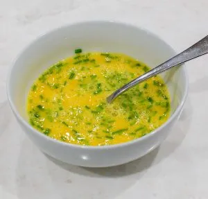
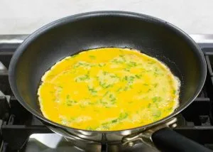
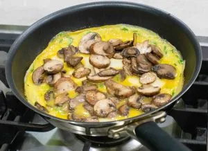

Omelet
Descripcion:
La tortilla francesa u omelet es un plato elaborado con huevo batido y cocinado con mantequilla o aceite, en una sartén. La forma que adquiere durante el cocinado es similar al de una hoja redonda, extendida o plegada sobre sí misma. La versatilidad de este plato es tan grande que existen innumerables variaciones.
Ingredientes"
- 3 huevos
- 1 punado de champinones salteados
- queso picado en cubos pequenos o rallado
- sal, pimienta y ciboulette picado fino
- 1 cucharada de mantequilla
Preparacion
- En una sartén a fuego medio (y si es la primera vez a fuego bajo, no quieren quemar la mantequilla) derretir la mantequilla y esperar a que empiece a burbujear suavemente.
- Por mientras colocar en un bol los huevos, sal, pimienta y ciboulette, batir por 20 segundos hasta que estén bien mezclados.

- Volcar en la sartén enmantequillada y caliente, dejar cocinar hasta que empiecen a ver que el borde esta cocido, empezar a mover la sartén para asegurarse que la omelette esta suelta y ya ha formado costra.

- Agregar el relleno y dejar que el queso se empiece a derretir. Si quieren doblar la omelette en 3 como la primera foto solo pongan relleno al medio una franja. Si la van a doblar por la mitad pueden poner relleno sobre toda la mezcla.

- Ayudándose con una espátula, plegar la omelette y pasar a un plato ojalá caliente.
- Dejar reposar 1 minuto.
- Servir.